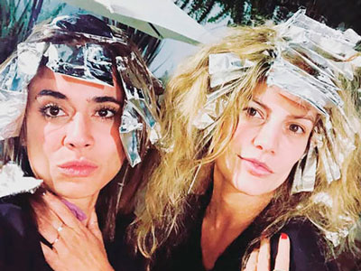
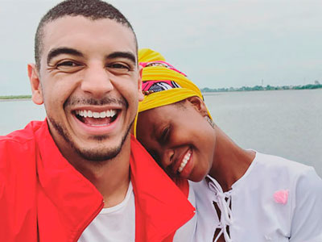
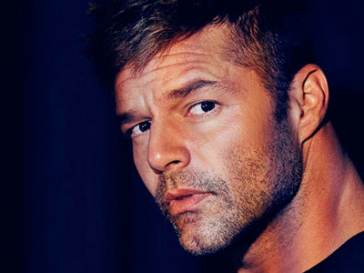
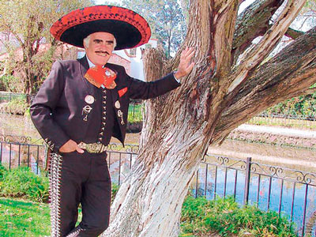

Chismes

¡ES EL PRIMERO!
Iván Marín logró lo que ningún otro comediante colombiano había hecho; tener contenido exclusivo en todas las plataformas digitales. Ahora todos podremos disfrutar de las rutinas de Iván en cualquier lugar y momento del día.
¡Felicitaciones!.
¡SE UNEN!
Foto: Tomado de @paolajarapj
Dos grandes exponentes de la música popular se unen para sorprender a todos sus seguidores con una nueva propuesta musical. En varias ocasiones sus fanáticos les pidieron una canción juntos y aunque varios sospechaban, fue la talentosa Paola Jara quien dio la noticia oficial en sus redes sociales. La canción se llamará -Como si Nada-, junto al talentoso Jessi Uribe estamos seguros que será un éxito de la música popular.
¿DE RANCHERA A TROPICAL?
Dora Libia es una de las cantantes del género popular más queridas por los colombianos, sus canciones han cautivado a muchos, sin embargo pronto todo cambiará, la artista confirmó para Mi Gente Tv que muy pronto estará estrenando un nuevo tema, pero esta vez no será popular, sino tropical.
¡UNA EXPLOSIÓN DE TALENTO!
Foto: Tomado de @alexoficial
Alejandro Fernández y Sebastián Yatra pronto nos darán muchas sorpresas, ya iniciaron con un par de fotografías juntos, pero lo que se viene será mucho mejor, en exclusiva Yatra nos aseguró que en unos meses ambos cantarán juntos. Ahora estamos bastante ansiosos por la fecha de estreno de lo que seguro será un hit.
NUESTRAS HISTORIAS
La música de Javi Rodríguez ha enamorado a más de uno, ha sido tanto el éxito del cantante que este mes estrenó su primer álbum, titulado “Nuestras Historias”, el cual ha sido un éxito nacional y donde su canción -Ir a nadar- ha estado en los primeros lugares de las emisoras del país.
A PROBAR CON EL GÉNERO URBANO
Alexis Escobar ha demostrado que nadie le da la talla en sus canciones, es por esto que decidió arriesgarse y dejar a un lado todos los estereotipos musicales para grabar con un artista urbano y colombiano, aunque no sabemos quién es, si estamos bastante curiosos por conocer esta nueva faceta del artista.
¿DE CANTANTE A DISEÑADOR… DE MODAS?
Foto: Tomado de @jbalvin
El artista colombiano J Balvin hizo parte de uno de los eventos de moda mas importantes del país. “Colombia Moda 2018”. El consejo de Moda de EE.UU lo eligió para realizar una pasarela sin precedentes. ¡Felicitaciones al cantante paisa!.
JUNTO AL REY DEL MERENGUE
Después de su éxito -Latinos mundial- el cantante Shantana sigue acumulando reconocimientos y sumando a su repertorio musical grandes colaboraciones. “Si tú te vas” es su más reciente producción en la que también participa Wilfrido Vargas, una canción llena de nuevo sonidos que ha llegado para hacer bailar a muchos.
¿QUÉ PENSARÁN SUS FANS?
Foto: Tomado de @juanes
Con esta imagen los cantantes colombianos sorprendieron a sus millones de fanáticos a nivel internacional, al parecer Silvestre Dangond y Juanes traen una propuesta entre manos. El verdadero reto de estos artistas, es lograr la aceptación de sus seguidores, puesto que muchos dejaron claro en los comentarios de la publicación no estar muy seguros de esta nueva canción.
¿FLORECITA ROCKERA O FILARMÓNICA?
Foto: Tomado de @aterciopelados
Aterciopelados brindó un concierto nunca antes visto y lo mejor de todo gratis, con el fin de celebrar el cumpleaños de la capital, la Orquesta Filarmónica de Bogotá se unió a esta banda colombiana para dar un show espectacular. Una versión diferente de -Bolero Falaz- y -El Estuche-, dos de sus canciones más conocidas.
¿POR QUÉ TANTO MISTERIO?
Foto: Tomado de @jessicacedielnet
Jessica Cediel es una de las presentadoras de televisión más queridas por los colombianos, en esta ocasión nos tiene bastante curiosos, pues nadie sabe quién es el hombre con el que posa en esta fotografía, muchos afirman que es un familiar, pero varios creemos que es su pareja.

¡QUÉ DESPELUQUE!
Foto: Tomado de @mabelmoreno1
Éste par de actrices colombianas, generaron muchas risas en sus redes sociales con esta fotografía, Mabel Moreno y Carolina Ramírez ambas de cabello rubio, se mostraron bastante despeinadas, aspecto que sus seguidores no pudieron dejar de notar y nosotros tampoco.
¿GANAS DE SER PADRE?
Foto: Tomado de @maluma
Maluma confundió a sus más de 34 millones de seguidores en Instagram al publicar esta imagen donde pregunta qué tal le luce ser padre, sin embargo la imagen no fue lo único que generó controversia, pues Pipe Bueno, Farina y Pipe Peláez, afirmaron en los comentarios que sería un gran padre y que veían muy cerca ese momento. ¿Ellos sabrán algo?.
¡FELICITACIONES!
Foto: Tomado de @felipepelaez
Les presentamos a Marco Peláez Henao, hijo del cantante Felipe Peláez y su esposa Laura Catalina Henao. El bebé nació el 13 de julio y según afirma Pipe, desde ese momento, no ha parado de comer. Marco ya es una estrella en redes sociales pues desde su primera fotografía ha generado más de cien mil likes y comentarios.
POR TODO LO ALTO
Foto: Tomado de @jamesrodriguez10
Así fue el cumpleaños de nuestro jugador estrella James Rodríguez, quien celebró sus 27 años, en compañía de sus compañeros de la Selección Colombia, la cuota musical estuvo a cargo de Jessi Uribe, uno de los grandes exponentes de la música popular y quien puso a cantar a todos con sus canciones.

QUÉ BUEN GESTO
Foto: Tomado de @manuelmedrano
Manuel Medrano demostró ser una gran persona, trabajando de la mano de la Fundación Save The Children en Tumaco, allí el colombiano trabajó como maestro de música y artes, llevando a esta región del país la oportunidad de disfrutar de la música, adicional a esto Medrano creó una canción titulada -Con los niños de Tumaco-.
CONTANDO LOS DÍAS
Foto: Tomado de @nickyjampr
Así están todos los fans de Nicky Jam, pues la serie “El Ganador” la cual está inspirada en su vida y trayectoria musical, pronto llegará a Netflix, cabe recordar que esta historia estará llena de talento, Nanis Ochoa y Vin Diesel, son algunos de los famosos que estarán presentes.
¿Y EL ANILLO PARA CUÁNDO?
Foto: Tomado de @jlo y @ozuna
Ozuna se une a esta canción de Jennifer López, que ha sido todo un hit mundial. El cantante realizará un remix con Jennifer, esta unión comprueba el éxito de ambos artistas en la música.
RECOMENDADO FASHIONISTA
Instagram: @paopalaciovuelveatuesencia
Facebook: @paopalaciovuelveatuescencia
Paola Palacio, diseñadora especializada en diseño de carteras y zapatos de la Arsutoria School de Milán, radicada en Bogotá – Colombia, directora creativa de la marca, extrae su inspiración de las mujeres que construyen el mundo, que tejen historias, mujeres que admiran a otras mujeres, colores y contrastes que son el ADN de la marca, dando como resultado piezas sofisticadas, atrevidas y muy femeninas.
Su pasión por las carteras viene de sus padres y abuelos, quienes sembraron la semilla del amor por el cuero, razón por la que ha seguido una tradición familiar que la ha llevado a explorar más allá de la materia misma, pues a través de sus productos entrega historias y empoderamiento para mujeres en Latinoamérica, Centroamérica y Europa. Su producto se resume en pasión, tradición y estilo.
SE INCENDIÓ SU ESCENARIO
Foto: Tomado de @brunomars
Bruno Mars tuvo que detener uno de sus conciertos en Escocia, pues su escenario se incendió gracias a una luz que se estalló y provocó gran pánico entre los asistentes al concierto. Afortunadamente todo se solucionó unos minutos después y el cantante pudo culminar su show.

¡UN SHOW JUNTOS!
Foto: Tomado de @sinbandera
Muchos han esperado que Sin Bandera y Camila unieran sus voces en un mismo escenario. Para todos esos fans, la espera terminó, pues este par de grupos latinoamericanos pronto darán inicio a “4 Latidos Tour”, una serie de conciertos en todo Estados Unidos.
¡SE UNE A NETFLIX!
Foto: Tomado de @anitta
Las series autobiográficas están de moda y por supuesto Anitta no podía quedarse atrás, sin embargo su producción será diferente pues Netflix seguirá día a día el detrás de cámaras de la vida de la estrella pop brasileña.

NO SE CAMBIA POR NADIE
Foto: Tomado de @ricky_martin
Así está Ricky Martin, el cantante está muy emocionado por su nominación a los Emmy 2018 por Mejor Actor Secundario por American Crime Story, así lo dejó demostrado en sus redes sociales, cuando saltó y gritó de la emoción por este reconocimiento. ¡Mucha suerte!.

VUELVE MUCHO MÁS FUERTE
Foto: Tomado de @_vicentefdez
Vicente Fernández es uno de esos cantantes que todos aman y admiran, sin duda alguna es el papá de las rancheras. No conforme con todo su éxito, a sus 78 años, “Chente” regresa al escenario musical con una nueva propuesta titulada -En la cárcel de tu adiós-.
DE GIRA POR ESPAÑA
Foto: Tomado de @zoetheband
Zoé, una de las bandas de rock más importantes de Latinoamérica, se prepara para una gira por España, esto con el fin de presentar su más reciente disco “Aztlán” una colección de canciones que muestra desde sus primeros éxitos, hasta la fecha.